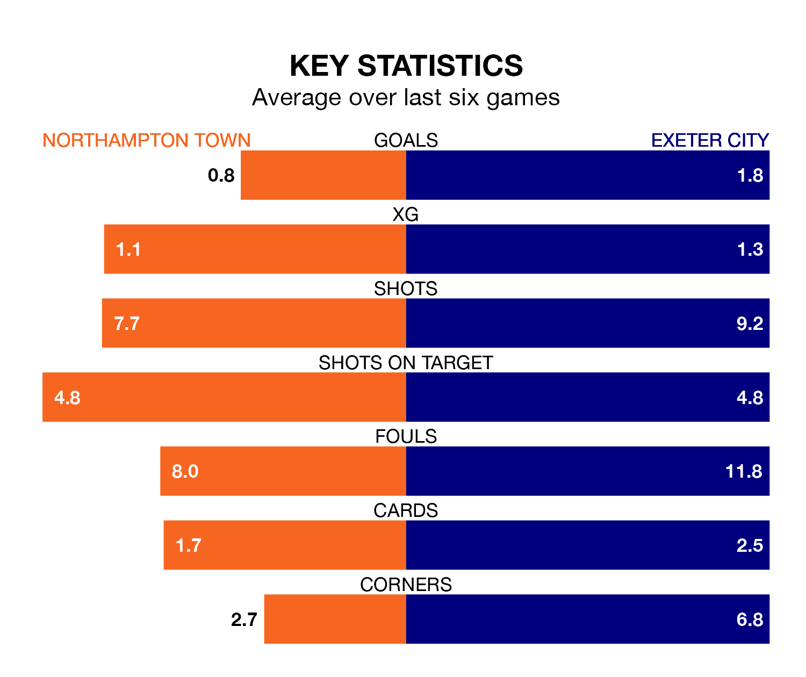

Exeter City face Northampton Town on Saturday seeking to protect their formidable unbeaten run in EFL League One.
Exeter are unbeaten in eight, with five wins and three draws, ahead of the 2pm kick-off.
They face a Northampton team who have won three and drawn one over the same number of games.
In the last 10 years, Northampton and Exeter have played each other on 11 occasions. Northampton won seven of them, Exeter one, and they drew three times.
On average, the Cobblers scored 2.0 goals and Exeter 0.8 in those matches.
Their last meeting was on September 30, when Northampton won 2-0 away.
With 43 goals in 44 games so far this season, Exeter are scoring at below the league average rate with 1.0 goals per game. And they are conceding at an average rate, letting in 58 goals at a rate of 1.3 per game.
Northampton are also below average scorers, with 1.2 goals per game, compared to a league average of 1.3. They have conceded 1.4 goals per game.
In Sam Hoskins, Town have one of the league's sharpest shooters so far this season. He has notched 15 goals in 37 appearances, to sit fifth in the scoring charts.
His goal rate of one every 192 minutes is much quicker than that of Reece Cole, City's top scorer with a goal every 429 minutes, and a total of six goals in 37 games.
The Cobblers are 12th in the table after 44 games, of which they have won 17 and drawn eight, earning 59 points.
The visitors are one place behind the home side in 13th, with 16 wins and 10 draws putting them on 58 points.
Northampton's last match was on Saturday, a 2-0 loss against Fleetwood Town.
Exeter beat Port Vale 4-2 last time out, also on Saturday, with Millenic Alli (two), Luke Harris and Zak Jules on the scoresheet.
Updated: 11:31 (UTC), 15/04/24